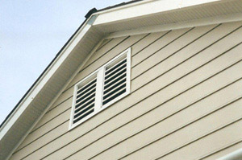

Houston Siding ON HOME ELEVATIONS

Is the siding of your house falling off, or perhaps that old wood siding is rotting? Or do you simply wish to have new siding installed on your new Houston home? Whatever the case may be, our Houston siding contractors can help you with any siding project from siding installation to siding repair.
Siding is to a house as skin is to the human body. Siding protects the house against the elements and pests. It helps prevent moisture penetration and the growth of contaminants such as mold, dust mites and bacteria. The siding you choose for your Houston home deserves careful consideration. At Texas Home Elevations, LLC, our Houston siding contractors can help you carefully chose the siding that is appropriate for your home. The professionals at Texas Home Elevations, LLC are committed to providing you with the finest quality service with professionalism and attention to detail. We take great pride in taking care of each client’s needs from start to finish and are available around the clock to answer any questions you may have or clarify anything about your siding project. We are there for you throughout the entire process.
Please take a look at our photo gallery or feel free to read the reviews from several of our most satisfied clients.
Contact us today for a no-obligation consultation or request service online!
Texas Home Elevations, LLC Provides These Detailed Services in Houston & The Surrounding Areas:
- Home Elevations
- Plumbing
- Carpentry
- Patios
- Skirting
- Block Walls
- Flood Vents
- Shoring
- Flooring
- Painting
- Downspouts
- Concrete Piers
- Wood Subfloors
- Concrete Stairs
- House Leveling
- Concrete Decking
- Gutters
- Kitchen Remodeling
- Bathroom Remodeling
- Decks
- Siding
We Install Custom Siding in the Following Areas of Texas:
Houston Home Elevation | Brazoria County Home Elevation | Fort Bend County Home Elevation | Harris County Home Elevation | Galveston County Home Elevation | Jefferson County Home Elevation | Victoria County Home Elevation | Pearland Home Elevation | Sugar Land Home Elevation | Pasadena Home Elevation | Galveston Home Elevation | Beaumont Home Elevation | Port Arthur Home Elevation | Rosenberg Home Elevation | Victoria Home Elevation | Baytown Home Elevation | League City Home Elevation | West Columbia Home Elevation | All Surrounding Towns & Communities
Benefits of Working with Texas Home Elevations, LLC:
- Responsiveness – One call to us and we move fast to help you.
- Reliability – Our company offers on time and on budget year-round services for our Houston area clients.
- Flexibility – We work around you and your environment. We are fully adaptable to any special needs, fully compliant with your billing procedures and can accommodate any special situation with your needed repairs and services.
- Specialized Service – The experts at Texas Home Elevations, LLC have been doing quality home elevation services in the Gulf Coast region for years. In that time, we have specialized our service to give great care to our work while providing top notch customer service.
- Family Owned - and proud of it! From our family to yours, we take pride in the work we do here.